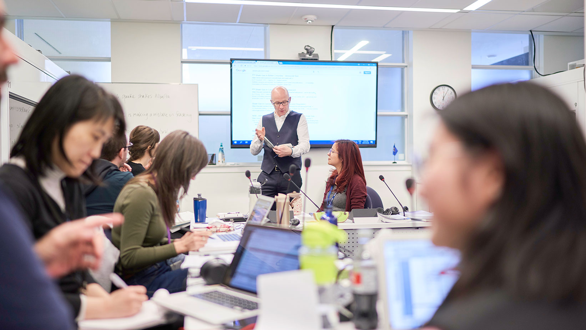
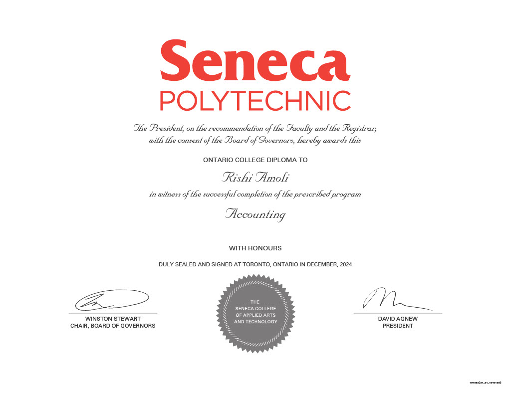
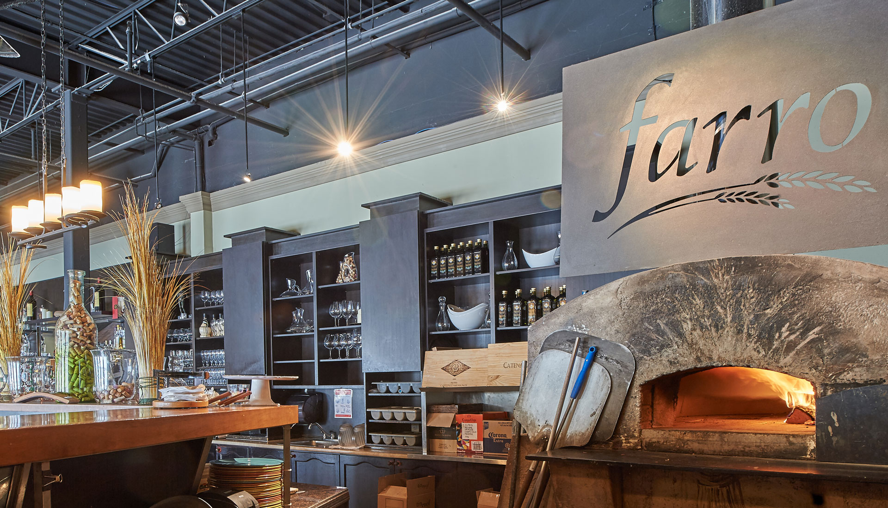
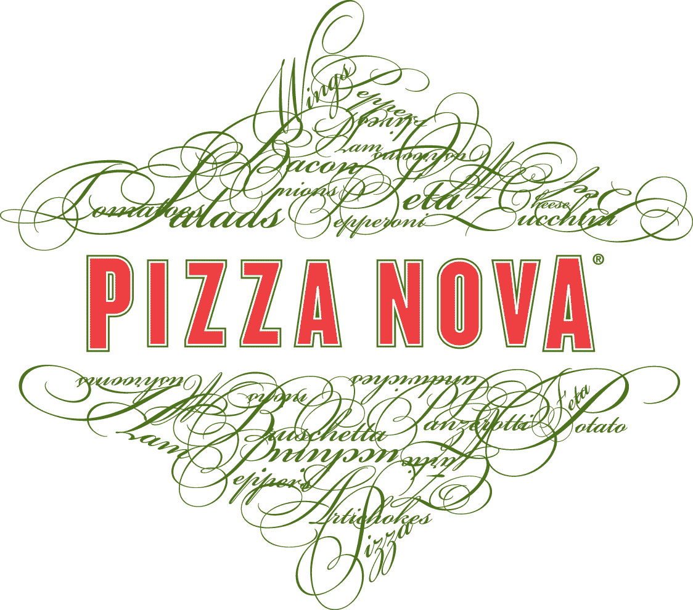
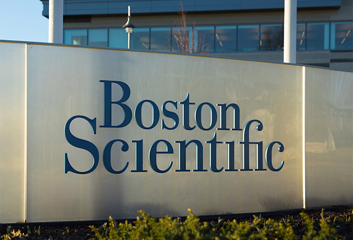
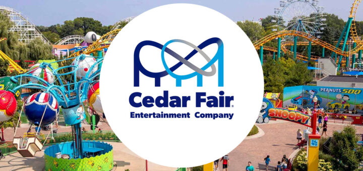

|
Rishi Amoli I am an aspiring accountant and economics student currently pursuing a Bachelor of Arts in Business Economics at York University, following the completion of my Diploma in Accounting from Seneca Polytechnic in 2024. I worked as a Quality Technician Intern at Boston Scientific, where I conducted product testing and ensured compliance for pharmacuticals. As a Site Surveyor at Enigma Research, I gathered and analyzed consumer data at major events, which strengthened my analytical and data collection skills. Additionally, I have worked extensively in the culinary industry at Farro Ristorante, Pizza Nova, and Cedar Fair, where I developed strong teamwork, time management, and customer service skills. Email / CV / Future-Plans / Linkedin / Instagram |

|
Education |
|  |
Bachelor of Arts in Business Economics
York University Toronto, ON Graduating December 2025
|
 |
Diploma of Accounting with Honours
Seneca Polytechnic Toronto, ON Graduated August 2024 with 3.6 GPA
|
Ontario Secondary School Diploma
Maple High School Vaughan, ON Graduated June 2021
Received IB Certificate |
{kind=link}
Work Experience |
|  |
Line Cook
Farro Ristorante Vaughan, ON January-February 2024 Assisted in preparing gourmet pizzas, desserts, and salads while maintaining quality, restocking inventory, and ensuring a clean workspace. |
|  |
Line Cook
Pizza Nova Vaughan, ON August-December 2023 Prepared pizzas, wedges, and wings while ensuring customer satisfaction. Managed orders, coordinated pickup and delivery, handled ingredient prep, and maintained a clean workspace. |
|  |
Quality Technician Intern
Boston Scientific Valencia, CA May-July 2023 Supported product testing with quality engineers and management. Assisted in documenting and analyzing medical device tests and evaluated IPG leads for compliance. |
|
Site Surveyor
Enigma Reasearch Toronto, ON Events throughout 2022-2023 Collected and analyzed participant data for TD at major events, including the Kitchener Blues Festival, Toronto Jazz Festival, TD Salsa Festival, and Glengarry Highland Games, delivering consumer insights to event stakeholders. |
|  |
Line Cook
Cedar Fair Vaughan, ON June-August 2021 Prepared and cooked various dishes, ensuring quality and efficiency while managing ingredients, restocking, and maintaining a clean workspace. |
Additional SkillsProficient in bookkeeping, and tax preparation, with experience using accounting software such as Sage 50/300 and Excel. Strong analytical and problem-solving skills, with the ability to interpret financial data and generate insights. Excellent communication and teamwork abilities, developed through professional and academic experiences. Adept at time management and multitasking in fast-paced environments. Familiar with data analysis tools and techniques, enhancing decision-making and reporting efficiency. Additionally, possess a minimal understanding of PYTHON and HTML coding language. |
|
Last Updated: 2025/03/30 |